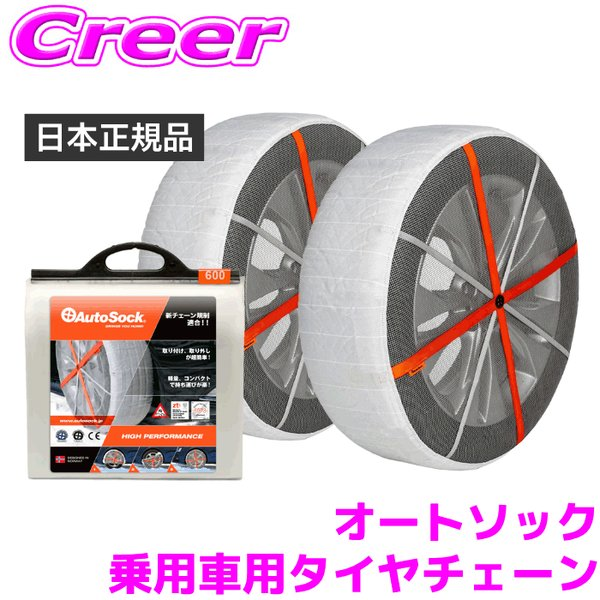
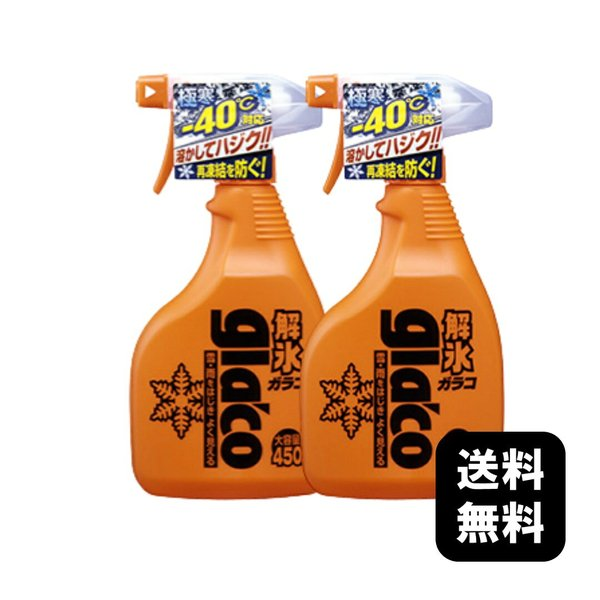
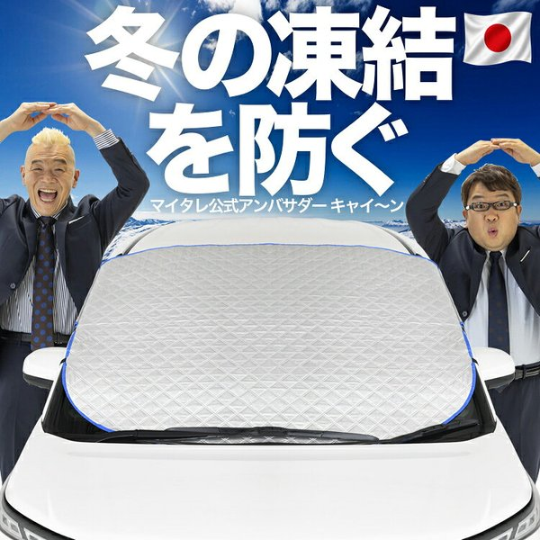
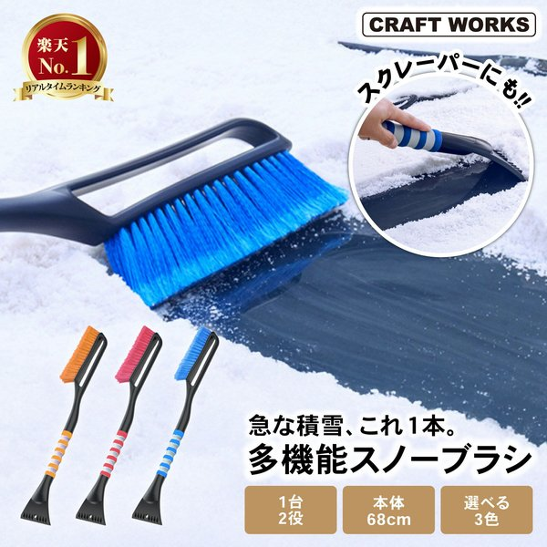
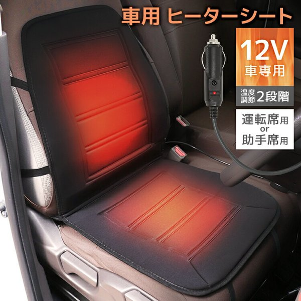
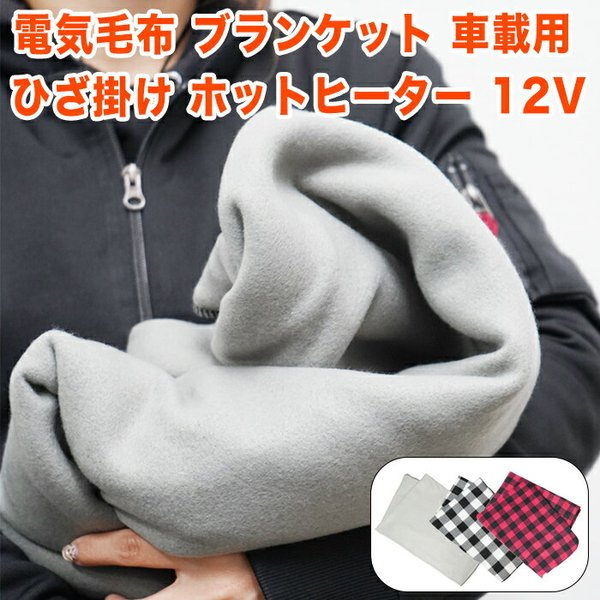
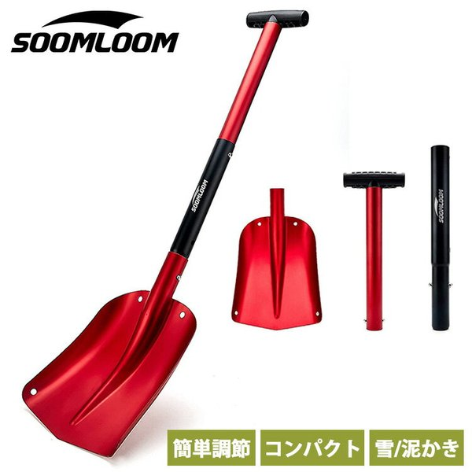
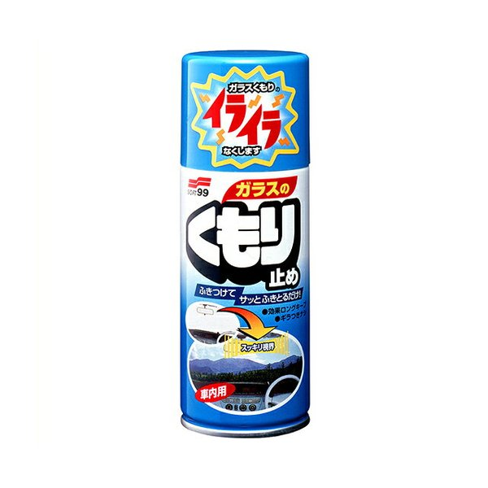
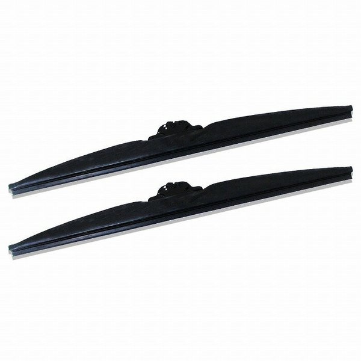

【冬の雪道・凍結対策】非金属タイヤチェーン・解氷スプレー・フロントガラス凍結防止カバー＆車内防寒グッズおすすめ10選
雪の日の朝は、フロントガラスの霜取りだけで10分持っていかれます。チェーンを巻く余裕がなく、そのまま出てヒヤッとした経験がある人も多いはずです。冬の車は、道具を先に揃えておくほど朝が楽になります。
選ぶ軸は、住んでいる地域の雪の量と、車に積めるかどうか。毎年雪が積もる地域なら非金属チェーンとスコップは必須、都市部なら凍結防止カバーと解氷スプレーで十分です。車内はシートヒーターと電気毛布があると、暖房が効くまでの数分が変わります。チェーンは金属と布で規制対応が異なるので、装着する道路の規制を先に確認しておきましょう。
本記事では、楽天市場で人気・高評価の冬の雪道・凍結対策グッズ10選を、実売価格とレビュー評価つきで写真付き紹介します。
- おすすめ10選 スペック・特徴比較表
- BEST 1｜バイアスロン クイックイージー QE2L（非金属タイヤチェーン）
- BEST 2｜布製タイヤチェーン（チェーン規制対応）
- BEST 3｜解氷ガラコ 450ml × 2本セット
- BEST 4｜フロントガラス 凍結防止カバー（霜除け・サンシェード兼用）
- BEST 5｜スノーブラシ スクレーパー（多機能・コンパクト）
- BEST 6｜カーシートヒーター 12V（後付け・即暖）
- BEST 7｜車載 電気毛布 12V（155×105cm・大判）
- BEST 8｜折りたたみ式 アルミ スノーショベル（収納袋付き）
- BEST 9｜ガラスのくもり止め G-28
- BEST 10｜スノーワイパーブレード 左右2本セット（11種類の長さ）
- 【読者負担0円】買わなくても得する無料サービス
- まとめ：冬の雪道・凍結対策10選の選び方
| 順位 | 商品名 | ブランド | 最大の特徴・おすすめ理由 | 総合評価 |
|---|---|---|---|---|
| BEST 1 | バイアスロン クイックイージー QE2L（非金属タイヤチェーン） | CARMATE | ジャッキアップ不要で装着できる | 5.00 |
| BEST 2 | 布製タイヤチェーン（チェーン規制対応） | オートソック | チェーン規制に対応した布製 | 4.47 |
| BEST 3 | 解氷ガラコ 450ml × 2本セット | SOFT99 | 吹きかけるだけで霜が溶ける | 4.68 |
| BEST 4 | フロントガラス 凍結防止カバー（霜除け・サンシェード兼用） | ATMY'S | 朝の霜取りが要らなくなる | 4.46 |
| BEST 5 | スノーブラシ スクレーパー（多機能・コンパクト） | CRAFT WORKS | ブラシとスクレーパーを1本でまかなえる | 4.27 |
| BEST 6 | カーシートヒーター 12V（後付け・即暖） | WEIWEI | シガーソケット給電ですぐ使える | 4.34 |
| BEST 7 | 車載 電気毛布 12V（155×105cm・大判） | CAR FUJI | 155×105cmの大判サイズ | 4.31 |
| BEST 8 | 折りたたみ式 アルミ スノーショベル（収納袋付き） | Soomloom | アルミ製で軽く、折りたたんで積める | 4.64 |
| BEST 9 | ガラスのくもり止め G-28 | SOFT99 | 462円で試しやすい価格 | 5.00 |
| BEST 10 | スノーワイパーブレード 左右2本セット（11種類の長さ） | WIDE RANGE | 雪が付きにくいグラファイト仕様 | 4.40 |
バイアスロン クイックイージー QE2L（非金属タイヤチェーン）

カーメイトの非金属タイヤチェーン「バイアスロン クイックイージー」。ジャッキアップも車の移動も不要で、その場で装着できます。金属チェーン特有の振動が少なく、JASAA認定品なので安心して使えます。雪の予報が出た日に、帰り道で装着する使い方に向いています。楽天市場での実売価格は約22,015円（2026年11月時点）。
- ジャッキアップ不要で装着できる
- 非金属で振動と騒音が少ない
- JASAA認定品
- 2万円台で、金属チェーンより価格は高い
布製タイヤチェーン（チェーン規制対応）

布製のタイヤカバー型チェーン。金属チェーンが規制される欧州でも認められている方式で、日本のチェーン規制にも対応しています。装着はタイヤに被せて少し動かすだけ。乾燥路では摩耗するため、雪の区間だけ付けて走る使い方が基本です。楽天市場での実売価格は約14,280円（2026年11月時点）。
- チェーン規制に対応した布製
- 被せて少し動かすだけで装着できる
- 金属チェーンより静かで乗り心地がよい
- 乾燥路を走ると摩耗が早い
解氷ガラコ 450ml × 2本セット

フロントガラスに吹きかけるだけで霜と氷を溶かす解氷スプレー。撥水成分が入っているので、溶かしたあとに再び凍りにくくなります。450mlが2本セットなので、1本は自宅用、1本は車載用に分けて置いておけます。楽天市場での実売価格は約2,630円（2026年11月時点）。
- 吹きかけるだけで霜が溶ける
- 撥水成分で再凍結しにくい
- 2本セットで車載用も確保できる
- 氷が厚い日は2回に分けて吹きかける必要がある
フロントガラス 凍結防止カバー（霜除け・サンシェード兼用）

駐車中にフロントガラスへかぶせておく凍結防止カバー。朝の霜取りの手間がなくなり、出発前の数分を取り戻せます。軽自動車からSUV、ミニバンまでサイズが展開されており、夏はサンシェードとしても使えます。楽天市場での実売価格は約3,100円（2026年11月時点）。
- 朝の霜取りが要らなくなる
- 軽自動車からSUVまでサイズがある
- 夏はサンシェードにも使える
- 毎晩の付け外しに1分ほどかかる
スノーブラシ スクレーパー（多機能・コンパクト）

ブラシとスクレーパーが1本になった除雪用品。フロントガラスの雪を払い、凍りついた霜はスクレーパーで削れます。コンパクトなので車のドアポケットに入れておけます。3色から選べ、車の色に合わせやすいのも利点です。楽天市場での実売価格は約1,480円（2026年11月時点）。
- ブラシとスクレーパーを1本でまかなえる
- 車載できるコンパクトサイズ
- 3色から選べる
- 全長が短めなので、屋根の雪おろしには別の道具が要る
カーシートヒーター 12V（後付け・即暖）

シガーソケットから電源を取る後付けのシートヒーター。スイッチを入れるとすぐ座面が温まり、暖房が効くまでの寒さをしのげます。取り付けは座席に置いてベルトを通すだけなので、どの車にも付けられます。楽天市場での実売価格は約1,860円（2026年11月時点）。
- シガーソケット給電ですぐ使える
- スイッチを入れると即暖
- 置くだけの簡単取り付け
- エンジンを止めると使えない
車載 電気毛布 12V（155×105cm・大判）

シガーソケットで使える車載用の電気毛布。155×105cmの大判サイズで、膝掛けとしても、後席で子どもにかけるのにも足ります。暖房が効きにくい軽自動車や、車中泊の防寒にも使えます。楽天市場での実売価格は約2,980円（2026年11月時点）。
- 155×105cmの大判サイズ
- シガーソケットで給電できる
- 車中泊の防寒にも使える
- 温度調節の細かさは商品ページで確認しておく
折りたたみ式 アルミ スノーショベル（収納袋付き）

アルミ製の折りたたみスコップ。車に積んでおけば、駐車場で埋まったタイヤを掘り出せます。伸縮してロングにもなるので、腰をかがめずに雪かきができます。専用の収納袋付きで、トランクの隅に置いておけます。楽天市場での実売価格は約2,690円（2026年11月時点）。
- アルミ製で軽く、折りたたんで積める
- 伸縮して長く使える
- 専用収納袋付き
- アルミ製のため、硬く凍った雪を砕く用途には向かない
ガラスのくもり止め G-28

車内側のガラスに塗っておく曇り止め。冬は外気と車内の温度差でフロントガラスが曇りやすく、視界が悪くなります。462円と手頃なので、1本車に置いておけば、曇った日にすぐ対処できます。楽天市場での実売価格は約462円（2026年11月時点）。
- 462円で試しやすい価格
- フロントガラス内側の曇りを防ぐ
- SOFT99の定番ブランド
- 効果の持続期間は使用環境によって変わる
スノーワイパーブレード 左右2本セット（11種類の長さ）

雪が付きにくいグラファイト仕様の冬用ワイパー。325mmから650mmまで11種類の長さがあり、U字フック対応のアタッチメントが付いています。左右2本セットなので、冬の前に前側をまとめて替えられます。楽天市場での実売価格は約2,320円（2026年11月時点）。
- 雪が付きにくいグラファイト仕様
- 11種類の長さから選べる
- 左右2本セット
- 車種ごとに適合する長さの確認が必要
この記事の商品を買う前に、まずは無料で得する選択肢をチェック。どれも登録・利用は0円で、無料期間中に解約すれば料金はかかりません。読みたい雑誌がある人、ポイントを貯めたい人、アンケートなら気軽という人、それぞれに合うものを選べます。
初回31日無料・無料期間中に解約すれば0円 → 楽天ポイントモール｜登録無料で毎日ポイ活
買い物なしでもポイントが貯まる無料サービス → 楽天インサイト｜アンケートに答えてポイント
登録無料・すきま時間のアンケートで貯まる → 楽天カード｜年会費永年無料
新規発行・年会費ずっと0円 →
4つのサービスの違いと使い分けは「出費0円で得する！買わずにポイントが貯まる無料サービス厳選4選」でまとめています。
💡 まとめ：冬の雪道・凍結対策10選の選び方
冬の車は、朝の手間を減らす装備から揃えるのが効率的です。まずフロントガラスの凍結防止カバーと解氷スプレーで朝の霜取りをなくし、雪の多い地域なら非金属チェーンとスコップをトランクへ。車内はシートヒーターと電気毛布で、暖房が効くまでの寒さをしのぐ。曇り止めとスノーワイパーは数百円から揃えられるので、ついでに交換しておくと視界の安全性が上がります。
楽天市場では「5と0のつく日」や「お買い物マラソン」などのキャンペーンに合わせて購入すると、ポイント還元が最大化してお得に手に入ります。ぜひチェックしてみてくださいね。